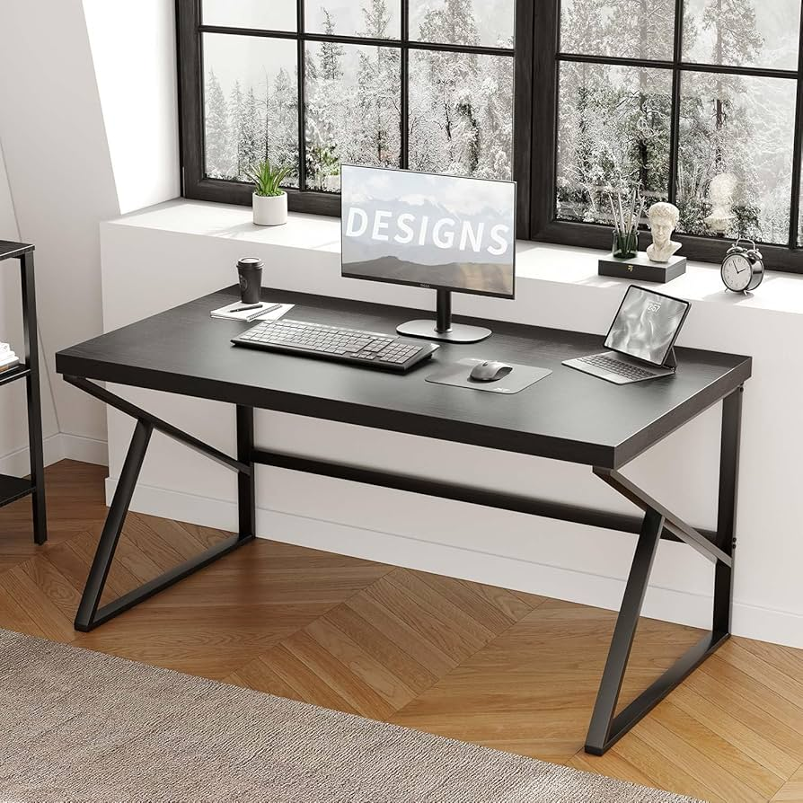
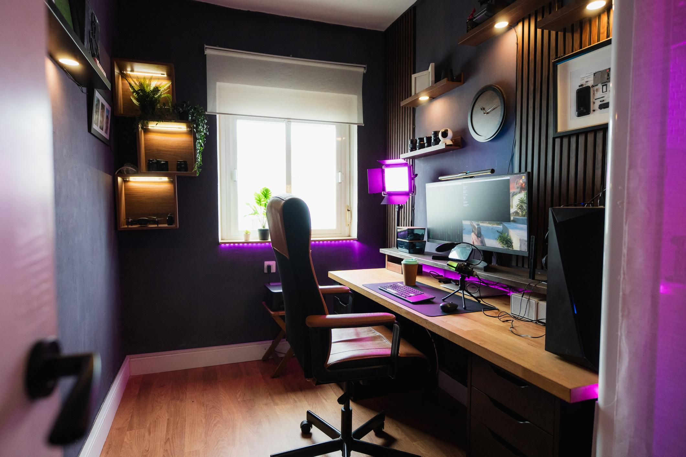

Home
Welcome, this is for Project1 and this has my interests and how I like to look at pictures
Pictures
A picture of a desk
A picture of a room
A picture of a beach
This website is a practice project created to demonstrate basic HTML structure, navigation, and styling using CSS. The goal of this page is to show how a simple layout can grow into a full website by adding new pages, images, and interactive features over time. As you explore the site, you will see examples of headings, navigation menus, and content sections working together to create a clear and organized user experience.
Web development combines creativity and problem-solving. By learning how HTML structures content and how CSS controls appearance, we can design pages that are both functional and visually appealing. This project is the first step toward building more advanced and responsive websites.
Quote
"Creativity is intelligence having fun."— Albert Einstein